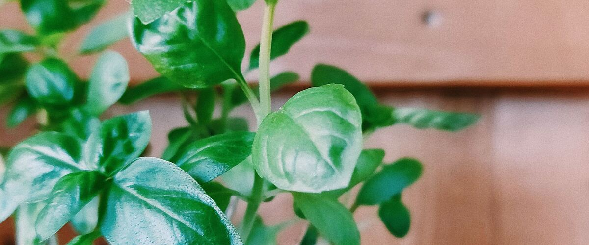

Beds, soil and water · Oregon · Washington · Idaho
Growing Vegetables in Containers on a Northwest Balcony or Patio
No yard? Herbs, greens, tomatoes and more grow well in pots. Container sizes, soil, watering and the best crops for small Northwest spaces.
You don't need a yard to grow food. A sunny balcony, a patio or a strip of driveway can produce a surprising amount of salad greens, herbs and tomatoes. Containers even have some advantages in the Northwest: they drain well in a wet spring, and dark pots warm up faster than garden soil.
Start with sun
Sun matters more than anything else. Fruiting crops like tomatoes, peppers and cucumbers need at least six to eight hours of direct sun. Leafy greens and many herbs get by with four to six. A south- or west-facing balcony is ideal; a north-facing one is best for lettuce, parsley and mint.
Pot sizes that work
- Tomatoes: at least 5 gallons per plant, and bigger is better for tall varieties. Choose compact, bush or "patio" types, or cherry tomatoes.
- Peppers and eggplant: about 3 to 5 gallons each.
- Zucchini: a large pot of 10 gallons or more for one plant.
- Lettuce, spinach, arugula and other greens: a wide pot or window box at least 6 to 8 inches deep.
- Herbs: 1 to 2 gallons each. Give mint its own pot, because it spreads aggressively.
- Strawberries: hanging baskets, window boxes or strawberry pots, especially day-neutral varieties.
Every container needs drainage holes. Fabric grow bags are inexpensive, light and drain well.
Use potting mix, not garden soil
Garden soil packs down in a pot, drains poorly and can carry weeds and disease. Use a good-quality bagged potting mix. Refresh it each year by mixing in some compost, or replace it if plants struggled.
Water and feed more often
Containers dry out much faster than the ground, especially in July and August, and a big tomato in a pot may need water every day during a heat wave. Water until it runs out the bottom, then check again the next day. A saucer under the pot helps, but empty it after rain so roots don't sit in water.
Because frequent watering washes nutrients out of the pot, feed container vegetables regularly through the season with a balanced fertilizer, following the label.
Easy crops to start with
- Leaf lettuce and other salad greens, which you can cut again and again
- Herbs like basil, parsley, chives, thyme and mint
- Cherry tomatoes
- Bush beans
- Kale and Swiss chard
- Radishes
Planting dates are the same in pots as in the ground. Enter your ZIP to see when to plant each crop, or build a plan with My garden plan.